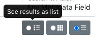
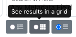
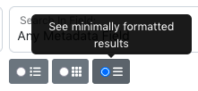

Edit Dashboard
The default Dashboard interface (also labeled “Search” in the tools) has a number of features to identify specific sub-sets of records. In particular, there are a number of filters on the left side of the screen.
General Notes
Records that display are based on an individual editor’s permissions
Filters only show up when there are at least two options (e.g., “collection” won’t display if an editor only has access to edit one collection)
Tool Uses
Some filters are useful for quality control, e.g.:
hidden records (in a collection that should be visible)
incomplete records
invalid dates
records without place names / place boxes / place points (that should have them) or vice versa
Sorting can also be relevant, especially sorting by creation date, e.g.:
sort serials to see if the dates in main titles match the order
for publications that have a name change (e.g., NTSU vs. UNT), verify whether items at the beginning/end of the list fall in the range
Quality Control Example
Here are some examples of what to check specifically from the Dashboard:
Are all records visible (or the number expected)?
Visible records are complete
The numbers for collection/institution seem correct
Collection usage is correct (especially if some/all items should be in multiple collections)
Dates for visible records are valid
Resource types match expectations
Special Features
The menu to the right of the search bar lets editors sort by title, dates, ARKs, or completeness

Below the search box, there are buttons to change the way records are displayed; each display shows a different number of records per page and can make it easier to see different kinds of information
|  |  |  |
Any filters that have more than 7 options include a “view more” link at the bottom of the filter box that opens a search interface to see all possible list items
An icon next to each item ARK on the Dashboard lets editors copy the “title, ARK” value, which can be pasted directly into the relation field of a related item
When viewing reocrds in the “brief” view, there are icons below the page links (upper-right above the record titles) to download a .csv file of information for the 99 items on that page; either the ARKS or the information that is displayed in the list view (title, metaid, type, system, collection, institution, modification date, and accession date)
Tool Limitations
Filters show records that have invalid/missing values but do not provide information about what is wrong without looking at individual records